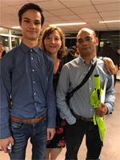

Over mij
Ik ben Luke Mutter ik ben 16 jaar en woon in Schiebroek Rotterdam. Ik kom uit een gezin van 5, Ik ben half indonesisch en heb een tweeling zus. Mijn hobby's zijn gamen, voetballen en uitgaan met mijn vrienden. Ik zit op het Techniek College Rotterdam en doe de opleiding Applicatie Ontwikelaar. Het is een niveau 4 BOL opleiding. Ik heb voor deze opleiding gekozen omdat ik het leuk vind om achter een computer te zitten en te coderen. Ik had ookal een klein beetje ervaring met HTML. Ik speel bij VVHillegersberg B1 en speel in de 2e klasse. Ik werk bij een indonesisch restaurant Mijnboemboe.
